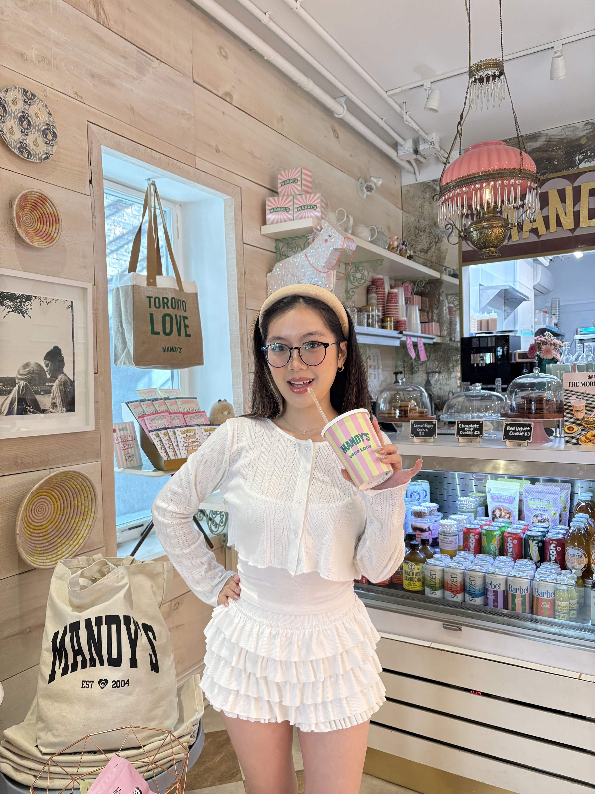

about
me
HEY! I'm Kat marketing freelancer with a geology degree and a genuine obsession with the natural world. ⛰️
I believe food and culture are the real reasons most of us choose where to go next. ⛩️🌮🍲
HEY! I'm Kat marketing freelancer with a geology degree and a genuine obsession with the natural world. ⛰️
I believe food and culture are the real reasons most of us choose where to go next. ⛩️🌮🍲
